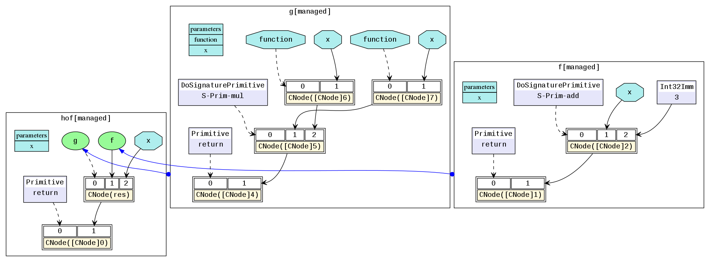

MindSpore IR（MindIR）
Linux Windows 框架开发 中级 高级 贡献者

简介
中间表示（IR）是程序编译过程中介于源语言和目标语言之间的程序表示，以方便编译器进行程序分析和优化，因此IR的设计需要考虑从源语言到目标语言的转换难度，同时考虑程序分析和优化的易用性和性能。
MindIR是一种基于图表示的函数式IR，其最核心的目的是服务于自动微分变换。自动微分采用的是基于函数式编程框架的变换方法，因此IR采用了接近于ANF函数式的语义。此外，借鉴Sea of Nodes[1]和Thorin[2]的优秀设计，采用了一种基于显性依赖图的表示方式。
文法定义
ANF是函数式编程中常用且简洁的中间表示，其文法定义如下所示：
<aexp> ::= NUMBER | STRING | VAR | BOOLEAN | PRIMOP
| (lambda (VAR …) <exp>)
<cexp> ::= (<aexp> <aexp> …)
| (if <aexp> <exp> <exp>)
<exp> ::= (let ([VAR <cexp>]) <exp>) | <cexp> | <aexp>
ANF中表达式分为原子表达式（aexp）和复合表达式（cexp），原子表达式表示一个常数值或一个变量或一个匿名函数；复合表达式由多个原子表达式复合组成，表示一个匿名函数或原语函数调用，组合的第一个输入是调用的函数，其余输入是调用的参数。
MindIR文法继承于ANF，其定义如下所示：
<ANode> ::= <ValueNode> | <ParameterNode>
<ParameterNode> ::= Parameter
<ValueNode> ::= Scalar | Named | Tensor | Type | Shape
| Primitive | MetaFuncGraph | FuncGraph
<CNode> ::= (<AnfNode> …)
<AnfNode> ::= <CNode> | <ANode>
MindIR中的ANode对应于ANF的原子表达式，ANode有两个子类分别为ValueNode和ParameterNode。ValueNode表示常数节点，可承载一个常数值（标量、符号、张量、类型、维度等），也可以是一个原语函数（Primitive）或一个元函数（MetaFuncGraph）或一个普通函数（FuncGraph），因为在函数式编程中函数定义本身也是一个值。ParameterNode是参数节点，表示函数的形参。
MindIR中CNode对应于ANF的复合表达式，表示一次函数调用。
在MindSpore自动微分时，会计算ParameterNode和CNode的梯度贡献，并返回最终ParameterNode的梯度，而不计算ValueNode的梯度。
示例
下面以一段程序作为示例，对比理解MindIR。
def func(x, y):
return x / y
@ms_function
def test_f(x, y):
a = x - 1
b = a + y
c = b * func(a, b)
return c
这段Python代码对应的ANF表达为：
lambda (x, y)
let a = x - 1 in
let b = a + y in
let func = lambda (x, y)
let ret = x / y in
ret end in
let %1 = func(a, b) in
let c = b * %1 in
c end
对应的MindIR为ir.dot：

在MindIR中，一个函数图（FuncGraph）表示一个普通函数的定义，函数图一般由ParameterNode、ValueNode和CNode组成有向无环图，可以清晰地表达出从参数到返回值的计算过程。在上图中可以看出，python代码中两个函数test_f和func转换成了两个函数图，其参数x和y转换为函数图的ParameterNode，每一个表达式转换为一个CNode。CNode的第一个输入链接着调用的函数，例如图中的add、func、return。值得注意的是这些节点均是ValueNode，因为它们被理解为常数函数值。CNode的其他输入链接这调用的参数，参数值可以来自于ParameterNode、ValueNode和其他CNode。
在ANF中每个表达式都用let表达式绑定为一个变量，通过对变量的引用来表示对表达式输出的依赖，而在MindIR中每个表达式都绑定为一个节点，通过节点与节点之间的有向边表示依赖关系。
如何保存IR
通过context.set_context(save_graphs=True)来保存各个编译阶段的中间代码。被保存的中间代码有两种格式，一个是后缀名为.ir的文本格式，一个是后缀名为.dot的图形化格式。当网络规模不大时，建议使用更直观的图形化格式来查看，当网络规模较大时建议使用更高效的文本格式来查看。
DOT文件可以通过graphviz转换为图片格式来查看，例如将dot转换为png的命令是dot -Tpng *.dot -o *.png。
函数式语义
MindIR较传统计算图的一个重要特性是不仅可以表达算子之间的数据依赖，还可以表达丰富的函数式语义。
高阶函数
在MindIR中，函数的定义是由一个子图来定义，但其本身可以是一个被传递的值，作为其他高阶函数的输入或输出。
例如下面一个简单的示例中，函数f作为参数传入了函数g，因此函数g是一个接收函数输入的高阶函数，函数f真正的调用点是在函数g内部。
@ms_function
def hof(x):
def f(x):
return x + 3
def g(function, x):
return function(x) * function(x)
res = g(f, x)
return res
对应的MindIR为hof.dot：

在实际网络训练脚本中，自动求导泛函GradOperation和优化器中常用到的Partial和HyperMap都是典型的高阶函数。高阶语义极大地提升了MindSpore表达的灵活性和简洁性。
控制流
控制流在MindIR中是以高阶函数选择调用的形式表达。这样的形式把控制流转换为高阶函数的数据流，从而使得自动微分算法更加强大。不仅可以支持数据流的自动微分，还可以支持条件跳转、循环和递归等控制流的自动微分。
下面以一个简单的斐波那契用例来演示说明。
@ms_function
def fibonacci(n):
if(n < 1):
return 0
elif(n == 1):
return 1
else:
return fibonacci(n-1) + fibonacci(n-2)
对应的MindIR为cf.dot：

其中fibonacci是顶层函数图，在顶层中有两个函数图被switch选择调用。✓fibonacci是第一个if的True分支，✗fibonacci是第一个if的False分支。在✗fibonacci中被调用的✓✗fibonacci是elif的True分支，✗✗fibonacci是elif的False分支。这里需要理解的关键是在MindIR中，条件跳转和递归是以高阶控制流的形式表达的。例如，✓fibonacci和✗fibonacci是作为switch算子的参数传入，switch根据条件参数选择哪一个函数作为返回值。因此，switch是把输入的函数当成普通的值做了一个二元选择操作，并没有调用，而真正的函数调用是在紧随switch后的CNode上完成。
自由变量和闭包
闭包（closure）是一种编程语言特性，它指的是代码块和作用域环境的结合。自由变量(free variable)是指在代码块中引用作用域环境中的变量而非局部变量。在MindIR中，代码块是以函数图呈现的，而作用域环境可以理解为该函数被调用时的上下文环境，自由变量的捕获方式是值拷贝而非引用。
一个典型的闭包用例如下：
@ms_function
def func_outer(a, b):
def func_inner(c):
return a + b + c
return func_inner
@ms_function
def ms_closure():
closure = func_outer(1, 2)
out1 = closure(1)
out2 = closure(2)
return out1, out2
对应的MindIR为closure.dot：

在例子中，a和b是自由变量，因为func_inner中变量a和b是引用的其父图func_outer中定义的参数。变量closure是一个闭包，它是函数func_inner与其上下文func_outer(1, 2)的结合。因此，out1的结果是4，因为其等价于1+2+1，out2的结果是5，因为其等价于1+2+2。
参考文献
[1] C. Click and M. Paleczny. A simple graph-based intermediate representation. SIGPLAN Not., 30:35–49, March 1995.
[2] Roland Leißa, Marcel Köster, and Sebastian Hack. A graph-based higher-order intermediate representation. In Proceedings of the 13th Annual IEEE/ACM International Symposium on Code Generation and Optimization, pages 202–212. IEEE Computer Society, 2015.